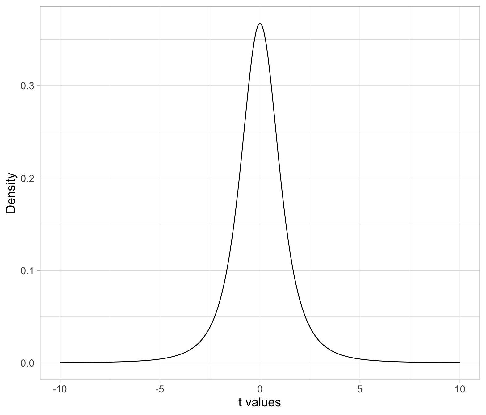
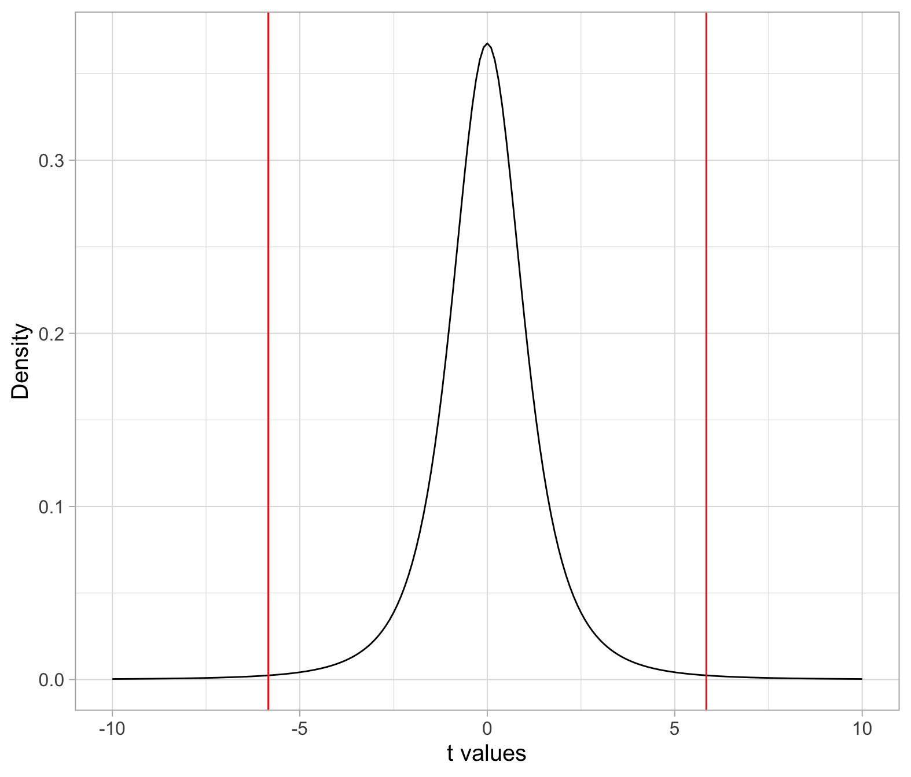
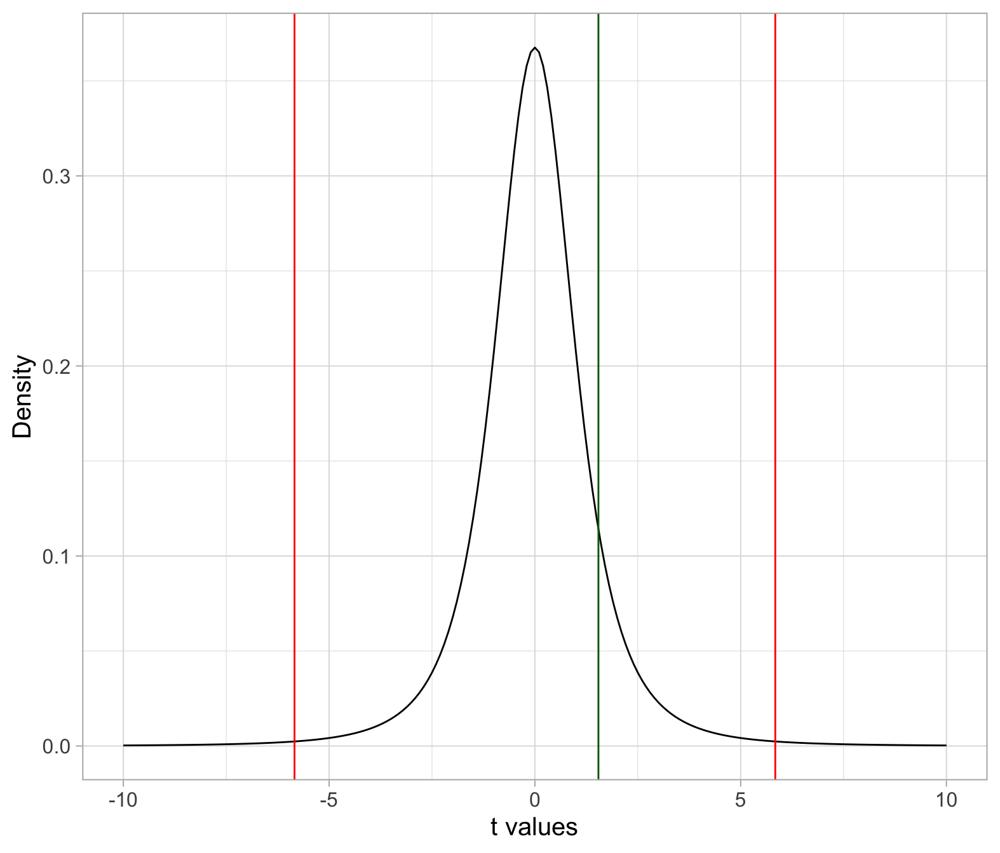

Hypothesis testing: critical values
1 Hypothesis testing: p-value method
Last week we saw that, to perform a hypothesis test, we need to:
Identify the null hypothesis, denoted \(H_0\).
Identify the alternative hypothesis, denoted \(H_1\).
Select the significance level, denoted \(\alpha\). Typical values are 0.1, 0.05, or 0.01.
-
Compute the test statistic. This is used to measure how consistent the data are with the null hypothesis.
- For testing a mean we use the t-statistic, denoted \(t\), which takes the following form: \[t = \frac{\bar x - \mu_0}{s / \sqrt{n}}\]
Compute the p-value.
-
Make a decision:
- if p-value \(\leq \alpha\), reject \(H_0\).
- if p-value \(> \alpha\), fail to reject \(H_0\).
2 Hypothesis testing: critical value method
The method we used last week to perform a hypothesis test is called the p-value method because it reduces to comparing the area corresponding to the p-value with the area corresponding to \(\alpha\). This week we investigate an equivalent approach, called the critical value method, which compares the t-statistics delimiting the \(\alpha\) area with the observed t-statistic that is used to compute the p-value area.
The changes to the procedure are minimal:
Identify the null hypothesis, denoted \(H_0\).
Identify the alternative hypothesis, denoted \(H_1\).
Select the significance level, denoted \(\alpha\). Typical values are 0.1, 0.05, or 0.01.
-
Compute the test statistic. This is used to measure how consistent the data are with the null hypothesis.
- For testing a mean we use the t-statistic, denoted \(t\), which takes the following form: \[t = \frac{\bar x - \mu_0}{s / \sqrt{n}}\]
Compute the critical values.
-
Make a decision:
- if the observed test statistic \(t\) lies beyond the critical values, reject \(H_0\).
- if the observed test statistic \(t\) lies within the critical values, fail to reject \(H_0\).
3 Examples
Suppose I give you a sample, for example:
Using \(\alpha = 0.01\), we wish to test whether the population the sample came from has a mean score that is different from 0:
\[H_0: \mu = 0\] \[H_1: \mu \neq 0\]
Sample mean:
xbar <- mean(sample_data$score)
xbar[1] 0.525Just because the sample mean is different from 0, it doesn’t mean that the population mean necessarily must also be. This difference could perhaps only be due to random sampling variation.
s <- sd(sample_data$score)
s[1] 0.6800735n <- nrow(sample_data)
n[1] 4SE <- s / sqrt(n)
SE[1] 0.3400368mu0 <- 0 # hypothesised value for mu in H0
tobs <- (xbar - mu0) / SE
tobs[1] 1.543951The observed sample mean (\(\bar x =\) 0.52) is 1.54 standard errors away from the hypothesised value of 0.
We need to compare the observed t-statistic (i.e. the one computed from the observed sample data) with the critical values from a t(3) distribution. These are the values that cut, respectively, an area of 0.005 to the left and 0.005 to the right.
Those are the quantiles of a t-distribution, hence the function required is qt().
If we want to have 0.01 probability equally divided among both tails, we will have 0.01/2 = 0.005 in each tail. Remember that qt() uses the probability to the left by default.
-
In the t(3) distribution:
- The middle 0.99 probability of the distribution lies in between the values \(-t^*\) = -5.84 and \(t^*\) = 5.84.
- To the left of \(-t^*\) = -5.84 lies a probability of 0.005 = 0.01/2
- To the right of \(t^*\) = 5.84 lies a probability of 0.005 = 0.01/2
- Hence, below -5.84 and beyond 5.84 lies a total of 0.01 probability. The probability in the tails is then 0.01 = \(\alpha\).
You don’t need to plot a t-distribution usually, but if you want to, here is how you could do this. First, create a sequence of t values, this is an arbitrary choice of points you want to plot the t distribution for. You can either go from -5 to 5, or -10 to 10, as you wish. Then compute the t density for each value. You would only use the function dt() for plotting the t distribution, in fact this function doesn’t calculate a probability. Remember that a probability is an area, and it is computed by pt().
plt <- tibble(
t_values = seq(-10, 10, by = 0.1),
t_dens = dt(t_values, df = n-1)
)
ggplot(plt, aes(x = t_values, y = t_dens)) +
geom_line() +
labs(x = 't values', y = 'Density')
We can also add the critical values that cut an area of 0.005 to the left and 0.005 to the right. We computed those earlier, remember?
We could add those as follows:
ggplot(plt, aes(x = t_values, y = t_dens)) +
geom_line() +
geom_vline(xintercept = tstar, col = 'red') +
labs(x = 't values', y = 'Density')
Any t-statistic smaller than -6 or any t-statistic larger than 6 falls into the area corresponding to the significance level \(\alpha = 0.01\).
Remember that we use \(\alpha\) to control the probability of the t-statistics in the null distribution that are considered “unlikely enough” to occur if \(H_0\) were true.
Where does our observed t-statistic lie?
ggplot(plt, aes(x = t_values, y = t_dens)) +
geom_line() +
geom_vline(xintercept = tstar, col = 'red') +
geom_vline(xintercept = tobs, col = 'darkgreen') +
labs(x = 't values', y = 'Density')
The observed t-statistic lies in between the critical values, rather than beyond. Hence, we fail to reject \(H_0\) at the 1% significance level.
If you were to compute the p-value, this would be larger than \(\alpha = 0.01\).
tobs[1] 1.543951tstar[1] -5.840909 5.840909If you don’t like to check it visually by looking at the number, you can get R to check it for you:
tobs <= tstar[1][1] FALSEtobs >= tstar[2][1] FALSESuppose you were given a different sample, such as
Using \(\alpha = 0.05\), we wish to test whether the population it came from has a mean score that is less than 0:
\[H_0: \mu = 0\] \[H_1: \mu < 0\]
xbar <- mean(sample_data$score)
xbar[1] -4.025Compute the observed value of the t-statistic:
s <- sd(sample_data$score)
s[1] 1.564981n <- nrow(sample_data)
n[1] 4SE <- s / sqrt(n)
SE[1] 0.7824907mu0 <- 0 # hypothesised value for mu in H0
tobs <- (xbar - mu0) / SE
tobs[1] -5.143831Compute the critical value. In a one-sided hypothesis test there is only one critical value as the entire \(\alpha\) probability (= 0.05 in this case) is assigned all in one tail.
In this case \(H_1 : \mu < 0\) so \(\alpha\) goes all in the left tail. This is because t-statistics that are much smaller than the hypothesised value, i.e. 0, will be considered as providing strong evidence against the null hypothesis.
tstar <- qt(0.05, df = n - 1)
tstar[1] -2.353363Compare the observed value of the t-statistic with the critical value:
tobs[1] -5.143831tstar[1] -2.353363The observed t-statistic is smaller than the critical value, so we reject \(H_0\) in favour of the alternative.
tobs <= tstar[1] TRUEAt the 5% significance level, the sample data provide strong evidence against the null hypothesis that the sample came from a population with a mean of 0, and in favour of the alternative that the population mean is less than 0.
As the observed \(t\) = -5.14 is smaller than the critical value \(t^*\) = -2.35, the p-value would also be smaller than \(\alpha = 0.05\).
Suppose you were given a different sample, such as
Using \(\alpha = 0.05\), we wish to test whether the population it came from has a mean score that is larger than 0:
\[H_0: \mu = 0\] \[H_1: \mu > 0\]
xbar <- mean(sample_data$score)
xbar[1] 0.65Compute the observed value of the t-statistic:
s <- sd(sample_data$score)
s[1] 1.268858n <- nrow(sample_data)
n[1] 4SE <- s / sqrt(n)
SE[1] 0.6344289mu0 <- 0 # hypothesised value for mu in H0
tobs <- (xbar - mu0) / SE
tobs[1] 1.024544Compute the critical value. In a one-sided hypothesis test there is only one critical value as the entire \(\alpha\) probability (= 0.05 in this case) is assigned all in one tail.
In this case \(H_1 : \mu > 0\) so \(\alpha\) goes all in the right tail. This is because t-statistics that are much larger than the hypothesised value, i.e. 0, will be considered as providing strong evidence against the null hypothesis.
tstar <- qt(0.95, df = n - 1)
tstar[1] 2.353363Compare the observed value of the t-statistic with the critical value:
tobs[1] 1.024544tstar[1] 2.353363The observed t-statistic is not more extreme than the critical value. It is smaller than the critical value, so we fail to reject \(H_0\). The sample data are consistent with the null hypothesis.
tobs >= tstar[1] FALSEAt the 5% significance level, the sample data do not provide sufficient evidence against the null hypothesis and hence we fail to reject the null that the sample came from a population with a mean of 0.
If you were to compute the p-value, as the observed t-statistic is smaller than the critical value, the p-value would be larger than \(\alpha = 0.05\).
4 Summary
We have learned to assess how much evidence the sample data bring against the null hypothesis and in favour of the alternative hypothesis.
The null hypothesis, denoted \(H_0\), is a claim about a population parameter that is initially assumed to be true. It typically represents “no effect” or “no difference between groups”.
The alternative hypothesis, denoted \(H_1\), is the claim we seek evidence for.
-
We performed a hypothesis test against \(H_0\) (and in favour of \(H_1\)) following these steps:
- Formally state your null and alternative hypotheses using precise symbols
- Select a significance level for the test.
- Consider the distribution of the t-statistics when \(H_0\) is true
- Compute the observed value of the t-statistic in our sample
- Obtain the critical values
- Compare the observed t-statistic with the critical values. If it lies beyond, reject the null hypothesis.
5 Worked example
In this week’s exercises you will perform the same test of hypothesis as last week’s lab, but using the critical value method rather than the p-value method.
A 2011 study by Courchesne et al.1 examined brain tissue of seven autistic male children between the ages of 2 and 16. The mean number of neurons in the prefrontal cortex in non-autistic male children of the same age is about 1.15 billion. The prefrontal cortex is the part of the brain most disrupted in autism, as it deals with language and social communication.
Research question
Do autistic male children have more neurons (on average) in the prefrontal cortex than non-autistic children?
That is, we wish to test:
\[H_0 : \mu = 1.15\] \[H_1 : \mu > 1.15\]
where \(\mu\) is the mean number of neurons (in billions) in the prefrontal cortex for all autistic male children.
In the following you will use a significance level \(\alpha = 0.05\).
Download link
The data can be found at this address: https://uoepsy.github.io/data/NeuronCounts.csv
Preview
| Case | Age | PFC_NC |
|---|---|---|
| 1 | 2 | 2.42 |
| 2 | 3 | 1.80 |
| 3 | 3 | 2.21 |
| 4 | 4 | 2.18 |
| 5 | 7 | 1.28 |
| 6 | 8 | 1.59 |
| 7 | 16 | 2.09 |
Codebook
- The first column,
Case, is an anonymised index used to identify each child. - The second column,
Age, records the age of each child. - The last column,
PFC_NC, contains the prefrontal cortex neuron counts (in billions).
Question 1. Read the data into R.
# A tibble: 7 × 3
Case Age PFC_NC
<dbl> <dbl> <dbl>
1 1 2 2.42
2 2 3 1.8
3 3 3 2.21
4 4 4 2.18
5 5 7 1.28
6 6 8 1.59
7 7 16 2.09Question 2. Compute the value of the t-statistic for the observed sample.
Recall the formula for the t-statistic:
\[ t = \frac{\bar x - \mu_0}{\frac{s}{\sqrt{n}}} \]
where
- \(\bar x\) is the sample average number of neurons in the prefrontal cortex
- \(\mu_0\) is the hypothesised value for the population parameter found in \(H_0\)
- \(s\) is the sample standard deviation
- \(n\) is the sample size
Hence, the value of the t-statistic for the observed sample is given by:
xbar <- mean(autism$PFC_NC)
xbar[1] 1.938571s <- sd(autism$PFC_NC)
n <- nrow(autism)
SE <- s / sqrt(n)
mu0 <- 1.15
tobs <- (xbar - mu0) / SE
tobs[1] 5.212963The sample mean neuron count, 1.94 billion, is 5.21 standard errors larger than the hypothesised value.
Question 3. Identify the null distribution, i.e. the distribution of the t-statistic when \(H_0\) is true. Compute the critical value(s) for the null distribution using the appropriate significance level.
When \(H_0\) is true, the t-statistic \(t = (\bar x - \mu_0)/(s / \sqrt{n})\) follows a t(6) distribution, where the degrees of freedom are computed as df = n - 1 = 7 - 1 = 6.
The critical value is the t-value cutting an area of 0.05 to its right, i.e. the following quantile
tstar <- qt(0.95, df = n - 1)
tstar[1] 1.94318Question 4. Make a decision.
Making a decision using the critical value method entails comparing the observed t-statistic with the critical value.
tobs[1] 5.212963tstar[1] 1.94318The observed t-statistic is larger than the critical value for a 5% significance level, hence we reject the null hypothesis.
tobs >= tstar[1] TRUEIf you were to compute the p-value, i.e. the probability of observing a t-statistic as large as, or larger, than the observed one, if the null hypothesis were true, you would obtain a value that is smaller than \(\alpha = 0.05\).
Question 5. Write up your results in the context of the research question.
When you use the critical value method, you don’t have a computed p-value, so the reporting will only say whether p < .05 or p > .05 depending on whether the observed t-statistic is beyond or not beyond the critical value(s).
- If \(t > t^*\), p < .05 (if you use a different \(\alpha\), change accordingly)
- If \(t < t^*\), p > .05 (if you use a different \(\alpha\), change accordingly)
The estimated mean number of neurons in the prefrontal cortex of male autistic children is 1.94 billion, with a standard error of 0.15 billion.
At the 5% significance level, we performed a one-sided test of significance against the null hypothesis that the mean number of neurons in the prefrontal cortex of all male autistic children was equal to that of all non-autistic male children. The sample results indicate that there is very strong evidence that the mean number of neurons in the prefrontal cortex may be larger for autistic compared to non-autistic male children: \(t(6) = 5.21, p < .05\), one-sided.
Footnotes
Courchesne, E., et al., “Neuron Number and Size in Prefrontal Cortex of Children with Autism,” Journal of the American Medical Association, November 2011;306(18): 2001–2010.↩︎